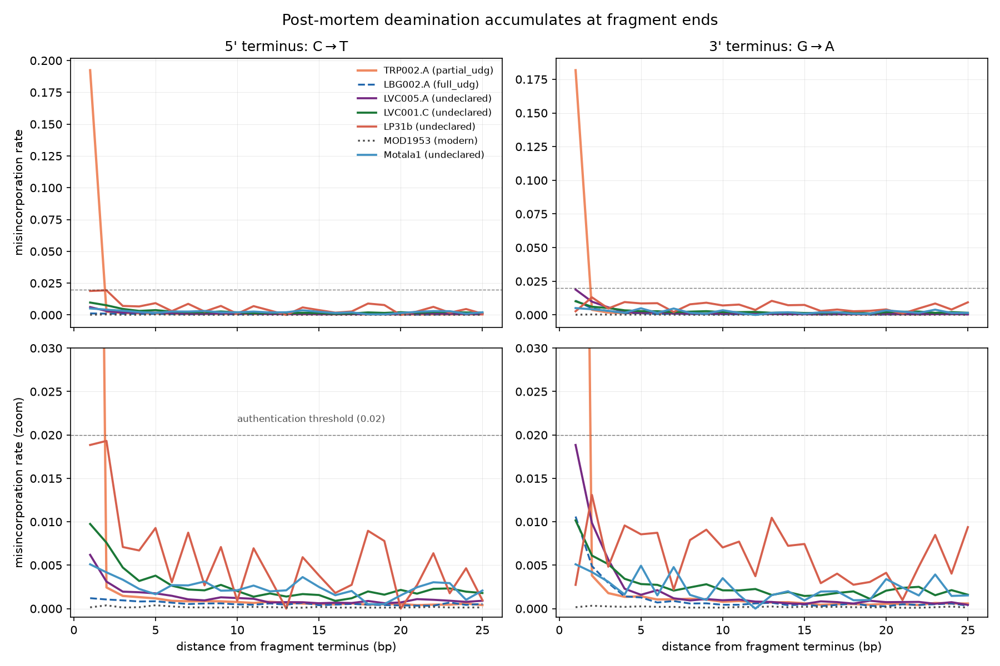
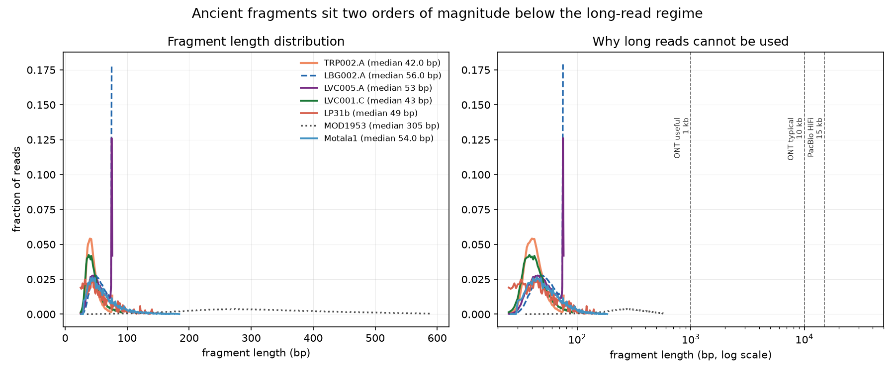

Introduction to Bioinformatics, midterm project 23. Authors: [partner A], [partner B]. Repository: [link].
An ancient sample is a mixture. A tooth from a plague burial yields a small amount of the target organism's DNA, a large amount of soil bacteria that colonised the remains after burial, and modern DNA from excavators and the laboratory. Only the first is evidence, and it is frequently the minority. The question a non-specialist needs answered is simple: is this library really ancient, and how much of it is the organism we care about?
The field's answer is that damage is the evidence. Ancient molecules carry a characteristic chemical signature that fresh DNA does not, so measuring it separates the two. This project implements that measurement, tests it against controls where the correct answer is known, and states where it cannot give an answer.
Fragmentation. After death, repair stops and the DNA backbone is cut continuously, mostly by depurination. Fragment length therefore decays roughly exponentially with time and with warm burial conditions. Typical ancient libraries have a modal length of 40–70 bp. We measure 42–56 bp in every ancient library here (section 6.3).
Cytosine deamination. Cytosine loses its amino group and becomes uracil. A polymerase reads uracil as thymine, so the sequenced molecule shows C→T where the original had C. This occurs along the whole molecule, but it accumulates at the ends for a mechanical reason: the ends of a fragment are frayed into short single-stranded overhangs, and deamination is roughly two orders of magnitude faster in single-stranded DNA than in the double-stranded interior. The observable signature is therefore not "excess C→T" but "C→T that is highest at the 5′ terminus and decays inward". On a double-stranded library the complementary G→A appears at the 3′ end, because the same event is read on the opposite strand after the overhang is filled in.
This gives a falsifiable test. A modern library should show a flat profile at the sequencing error rate; an ancient library should show a terminal spike against a flat interior; and a library treated with uracil-DNA glycosylase (UDG, which excises uracil before sequencing) should show a flat profile despite being ancient. The three predictions are exactly what our controls test.
All data come from the European Nucleotide Archive and are fetched by script (scripts/fetch_ena.py) with retry, resume and MD5 verification against the archive's checksum. The reference sequences are NCBI NC_003143.1 (Y. pestis CO92) and NC_012920.1 (human mitochondrion).
| Sample | Runs | Study | What it is | Declared protocol |
|---|---|---|---|---|
| TRP002.A | ERR3457840, ERR3457841 | PRJEB29990 | second-pandemic plague victim, targeted capture | partial UDG |
| LBG002.A | ERR3457603, ERR3457605 | PRJEB29990 | second-pandemic plague victim, targeted capture | full UDG |
| LVC005.A | ERR3341198, 197, 201, 200 | PRJEB29991 | first-pandemic plague victim, tooth, shotgun | not declared |
| LVC001.C | ERR3341142 | PRJEB29991 | first-pandemic plague victim, tooth, paired-end | not declared |
| LP31b | SRR1048901 | PRJNA231474 | historic (Justinian-era) Y. pestis | not declared |
| MOD1953 | SRR10259775 | PRJNA269675 | modern isolate, collected 1953-07-03, Chechnya, MiSeq | n/a (modern) |
| Motala1 | ERR577492 | PRJEB6272 | Mesolithic human, Sweden, shotgun | not declared |
Provenance audit. We queried seven structured fields per sample (date, country, location, title, library protocol, instrument, species). Completeness was 0.43–0.71. The archaeological context a reader actually needs (site, burial, radiocarbon date) is empty for all six ancient samples: it lives in the published papers, not the archive. Library protocol, which decides how the damage profile must be read, is declared for only two of seven samples. The only record with a collection date and country is the modern isolate. Practical consequence: for five of seven samples we could not know in advance what damage to expect, so we report what we find instead of assuming.
Standard Illumina preparation assumes double-stranded, kilobase-scale input, fragmented by sonication. Ancient DNA is short, damaged and nicked, so protocols are adapted. Double-stranded protocols blunt-end repair and ligate adapters to both ends of a duplex; molecules with single-strand nicks, or overhangs that do not fill in, are lost. Single-stranded protocols denature the DNA first and ligate adapters to each strand independently, which recovers nicked and very short molecules that double-stranded protocols discard and typically retains more of the terminal damage. Our data show why this matters for interpretation: UDG treatment, an optional step, removes uracils before amplification. Full UDG (LBG002.A) erases the signal almost completely; partial UDG (TRP002.A) removes interior uracils and leaves damage at the terminal base only. The library protocol therefore determines the expected damage profile, which is why undeclared protocols (section 3) limit what we can conclude.
Sequencing platform follows from the fragment length: all libraries were sequenced on Illumina HiSeq, NextSeq or MiSeq instruments, whose short, accurate reads (error about 0.1%) suit molecules of 40–70 bp that fit inside a single read.
Trimming used AdapterRemoval 3 with three departures from default, each of which would otherwise destroy genuine data:
| Setting | Why |
|---|---|
--preserve5p | Default quality trimming nibbles the 5′ end, which is where deamination concentrates. Without this flag the pipeline deletes the signal it exists to measure. |
--min-length 25 | Standard pipelines discard reads under 30–50 bp, but the modal ancient fragment is about 50 bp with a long left tail. 25 bp is roughly the shortest read that places uniquely in a 4.6 Mb genome. |
--merge (paired data) | Ancient fragments are shorter than the read, so both mates sequence the same molecule. Collapsing them corrects errors and makes read length a direct measurement of fragment length. |
Keeping the 5′ end unquality-trimmed has a cost: low-quality terminal bases survive and inflate every substitution type at position 1, including A→G, which deamination cannot produce. The damage profiler therefore drops aligned bases below Phred 20. On LVC005.A this halves the A→G control (0.015 → 0.007) while leaving C→T unchanged, because deamination yields a confidently called T whereas sequencer noise does not. Quality control was inspected with FastQC and MultiQC (results/qc/multiqc_report.html).
We used bwa aln, not bwa mem, because its behaviour on very short, mismatch-rich reads is predictable and it is the aDNA standard. Permissive settings were -l 1024 -n 0.01 -o 2: seeding is disabled (-l 1024), since the seed demands a near-exact match at the read start, where damage concentrates; and the edit-distance threshold is loosened (-n 0.01). Specificity is recovered with MAPQ ≥ 25. Every sample was also aligned with default bwa aln so the effect of the permissive settings could be measured rather than asserted.
For each aligned read we orient it to the original molecule and count mismatches at each of the first 25 positions from each end (scripts/damage_profile.py). The excess is the terminal rate minus the sample's own interior mean (positions 11–25), so a library with a globally high error rate cannot pass on error alone. A verdict needs: C→T and G→A excess both ≥ 0.02, agreeing within 4×, and the A→G control flat (rise ≤ 0.01). If the control moves, the verdict is UNRELIABLE instead of a guess. Endogenous content is mapped reads over total reads. Contamination is partitioned by the fraction of reads carrying terminal damage, with the expected ancient-library rate (d_ref = 0.30) stated rather than hidden.
A post-hoc decision, disclosed. The first full run labelled LVC005.A "no damage" although its 3′ G→A decayed smoothly (1.9%, 1.0%, 0.57%, 0.23%) just under the 0.02 cutoff. The modern control's terminal rate was 0.0002, so 0.01 sits more than 50× above the measured noise floor. We therefore added a weak-signal tier (excess ≥ 0.01 with monotone decay over three positions). This was introduced after seeing the data, and the threshold is a design choice, not a fitted value.
| Sample | Protocol | Verdict | 5′ C→T excess | 3′ G→A excess | A→G control | Mapped / total | Median frag. |
|---|---|---|---|---|---|---|---|
| TRP002.A | partial UDG | ANCIENT | 0.1918 | 0.1811 | 0.0032 | 23.3% | 42 |
| LBG002.A | full UDG | UDG_TREATED_RESIDUAL_SIGNAL | 0.0007 | 0.0101 | 0.0028 | 32.0% | 56 |
| LVC005.A | undeclared | WEAK_ANCIENT_SIGNAL | 0.0054 | 0.0181 | 0.0072 | 18.3% | 53 |
| LVC001.C | undeclared | NO_DAMAGE_DETECTED | 0.0080 | 0.0083 | 0.0094 | 7.0% | 43 |
| LP31b | undeclared | UNRELIABLE | 0.0150 | −0.0027 | 0.0112 | 2.5% | 49 |
| MOD1953 | modern | MODERN_AS_EXPECTED | 0.0000 | −0.0000 | 0.0015 | 94.7% | 305 |
| Motala1 | undeclared | NO_DAMAGE_DETECTED | 0.0031 | 0.0034 | 0.0035 | 0.11% (mtDNA only) | 54 |

The two controls. TRP002.A shows 19.2% C→T at the terminal base against 0.07% in its interior, with a matching 18.1% G→A at the 3′ end and an A→G control of 0.3%. The signal falls to 0.24% by the second base: a spike confined to one base, which is the signature of partial UDG and not of an untreated library. The profile shape reports the protocol. MOD1953 shows 0.0001 and 0.0002 at the terminal bases. The estimator fires where it should and is silent where it should.
What the other rows mean. LBG002.A (full UDG) correctly shows almost no C→T, but a 1% residual 3′ G→A, consistent with UDG not excising every uracil; it cannot be authenticated by damage and its antiquity must rest on fragment length, context or phylogeny. LVC005.A shows a weak, damage-shaped 3′ signal; on its own damage cannot say whether it is partly UDG-treated, unusually well preserved, or diluted by modern DNA. LVC001.C and Motala1 show no detectable damage. For these, "no damage" is ambiguous by construction because their protocol is undeclared: it fits a UDG-treated library, modern contamination, or insufficient depth. LP31b is UNRELIABLE because its A→G control rises by 0.0112 on only 4,617 usable reads; with about 1,200 terminal A positions the uncertainty alone is comparable to the effect, so the honest output is "not enough data".
Endogenous fractions range from 0.11% to 94.7%, but they are not comparable across rows. TRP002.A and LBG002.A are targeted-capture libraries (archive field library_strategy), so their 23% and 32% reflect bait enrichment, not natural preservation. Motala1 is a human shotgun library mapped to the mitochondrial genome only, so 0.11% is the mtDNA share of all reads, not the endogenous human fraction. MOD1953 is a pure culture, so 94.7% is expected. Only the LVC005.A and LVC001.C values (18.3% and 7.0%, shotgun from tooth) are directly interpretable as endogenous content. Duplicate fractions are not reported: we did not run duplicate marking, and an unmarked BAM reports zero.
The damage-based contamination estimate is conditional on d_ref. For TRP002.A, 7.7% of reads carry terminal damage in a two-base window; with d_ref = 0.30 this would imply an ancient fraction of about 26%, but because partial UDG confines damage to a single base the true d_ref for this library is not 0.30, so we do not present this number as a contamination fraction. We do not claim a validated contamination percentage for any sample. This is a limitation, not a result.

| Sample | n | Median | 95th pct | Longest | ≥ 1,000 bp | At read cap |
|---|---|---|---|---|---|---|
| TRP002.A | 1,312,882 | 42 | 63 | 76 | 0 | 1.3% |
| LBG002.A | 248,802 | 56 | 75 | 75 | 0 | 17.9% |
| LVC005.A | 147,349 | 53 | 75 | 76 | 0 | 4.2% |
| LVC001.C (merged) | 151,585 | 43 | 73 | 91 | 0 | 0.1% |
| Motala1 | 8,928 | 54 | 111 | 184 | 0 | 0.0% |
| MOD1953 (modern) | 513,605 | 305 | 518 | 591 | 0 | 0.0% |
The negative result, argued in two parts. (1) There is no long molecule to read. Across 2.4 million ancient fragments none reaches 1 kb, and the median is 42–56 bp. Long-read platforms only gain over Illumina above several kilobases, so ancient DNA gives them nothing to work with. The modern control, at 305 bp, is itself still two orders of magnitude below that regime, because it was sequenced as short-insert Illumina. (2) The error rate would obscure the signal where it is weak. Raw ONT error is about 5% and PacBio CLR about 12%. TRP002.A's 19% terminal signal is 3.8× the ONT error and 1.6× the CLR error, so a strongly damaged library would remain detectable in principle; but the weak libraries here (0.5–2%) fall well below both. This second argument is therefore sample-dependent and we present it as supporting evidence only; the decisive argument is the first. A caveat on the measurement: reads that reach the full cycle length are right-censored (17.9% of LBG002.A), so "longest" is a lower bound on the true length for those samples.
Permissive alignment places 0.4–5.9% more reads than defaults in ancient samples (1.5% for TRP002.A, 5.9% for LVC001.C). Our hypothesis was that the extra reads are the damaged ones, and our first metric appeared to confirm it: the damaged-read fraction was 8–15× higher among rescued reads. That metric was invalid. It gave 123× for the modern control, which has no damage, because reads rescued by permissive alignment are rescued since they carry extra mismatches of any kind. We replaced it with a damage-specific one: of all terminal mismatches in a group of reads, what fraction are damage-type (C→T at the 5′ end, G→A at the 3′ end)?
| Sample | Damage-type share, reads rescued by permissive only | Damage-type share, reads placed by both |
|---|---|---|
| TRP002.A | 10.4% (n = 14,140) | 82.1% (n = 123,074) |
| LBG002.A | 5.9% (1,533) | 9.7% (11,006) |
| LVC005.A | 8.4% (2,098) | 13.4% (7,679) |
| LVC001.C | 7.8% (5,738) | 10.3% (4,615) |
| MOD1953 (modern) | 6.5% (214) | 5.7% (3,414) |
The result is the opposite of the hypothesis. In TRP002.A, 82% of terminal mismatches in reads that default alignment already places are damage-type, but only 10% in the extra reads, which is close to the modern control's chance level (about 6%). Default alignment is not discarding deaminated molecules in these data, because partial-UDG damage sits at a single terminal base and a one-mismatch penalty is within default tolerance. The reads that permissive settings add are divergent or erroneous, not damaged. The permissive settings are also expensive: 229 s against 30 s for TRP002.A. We would not claim the same for a non-UDG library with damage over ten positions, where several mismatches per read could cross the threshold; we could not test that case because no sample here has a confirmed non-UDG protocol. Reference bias of the kind that distorts ancient genotypes is therefore not demonstrated by these data, which is a finding in its own right.
All steps are Snakemake rules, with parameters in config/config.yaml, each non-default value justified. Our own scripts stream the BAM, so their memory stays flat: 30–32 MB for damage profiling on inputs of 0.5 and 1.3 million reads, and 63 MB for trimming 6.7 million reads. The aligner is the exception: permissive bwa aln peaked at 804 MB on 1.1 million reads, the largest footprint in the pipeline and the one that would limit scale. The largest input processed was 8.0 million reads (Motala1, 0.5 GB). We did not process the 70 GB Ust’-Ishim genome; we expect the streamed scripts to scale linearly, but we have not measured it.
Profiling before optimising. The first full run showed damage profiling taking 130 s on the modern control (0.5 M reads of about 300 bp) but only 58 s on TRP002.A (1.3 M reads of about 42 bp): cost scaled with bases, not reads. The cause was one reference lookup per base. Fetching the reference once per read cut runtime 3.2× for damage profiling (122.6 s → 38.6 s), 4.5× for the reference-bias step (314 s → 70 s) and 4.7× for authentication (154 s → 33 s), with byte-identical output and unchanged memory. Runtimes are in results/summary/runtime.tsv and the pre-optimisation values in runtime_before_optimisation.tsv. Snakemake's own memory benchmark returns NA on macOS, so memory was measured with /usr/bin/time -l.
d_ref that partial UDG invalidates, and we did not run an X-chromosome or mitochondrial-haplotype test, which needs a high-coverage human genome.Damage at fragment ends is a sound authentication test, and our implementation passes both controls: silent on a documented 1953 modern isolate, a 270-fold terminal enrichment on a declared partial-UDG ancient library. Its weaknesses are as instructive as its successes. It cannot say anything about UDG-treated libraries, it is ambiguous when the protocol is undeclared, and it is underpowered at low depth. Long-read sequencing is inapplicable because no ancient fragment approaches the 1 kb at which it begins to help. Permissive alignment recovers a few percent more reads, but in these data they are not the damaged ones. The archive records rarely contain the context needed to interpret any of this, so the paper behind each accession remains part of the evidence.
bash scripts/run_test.sh verifies the pipeline from raw reads on an 8.5 MB committed test set in about 20 seconds and ends with TEST PASSED. The full analysis is snakemake -s workflow/Snakefile --cores 6 after bash scripts/fetch_refs.sh. Environment: envs/environment.lock.txt (osx-arm64, explicit).